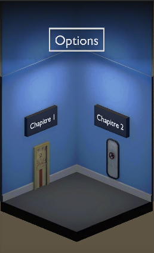

Escape Time a is a mobile reflexion game with Escape Game and Point'N Click mechanics. This project was developed by 7 Game Art and Game Design students in 4 months. I developed all the Gameplay and a Level Design Tool to ease the creation of rooms.

Foxy Flox is a Virtual Reality game in multiplayer in wich players manipulates physics based pieces and stack them to reach the wining point. The game was developed in 4 months by 4 students in Game Design, one student in Game Programming (me) and 2 artists. I developed most of the Gameplay and all of the network .